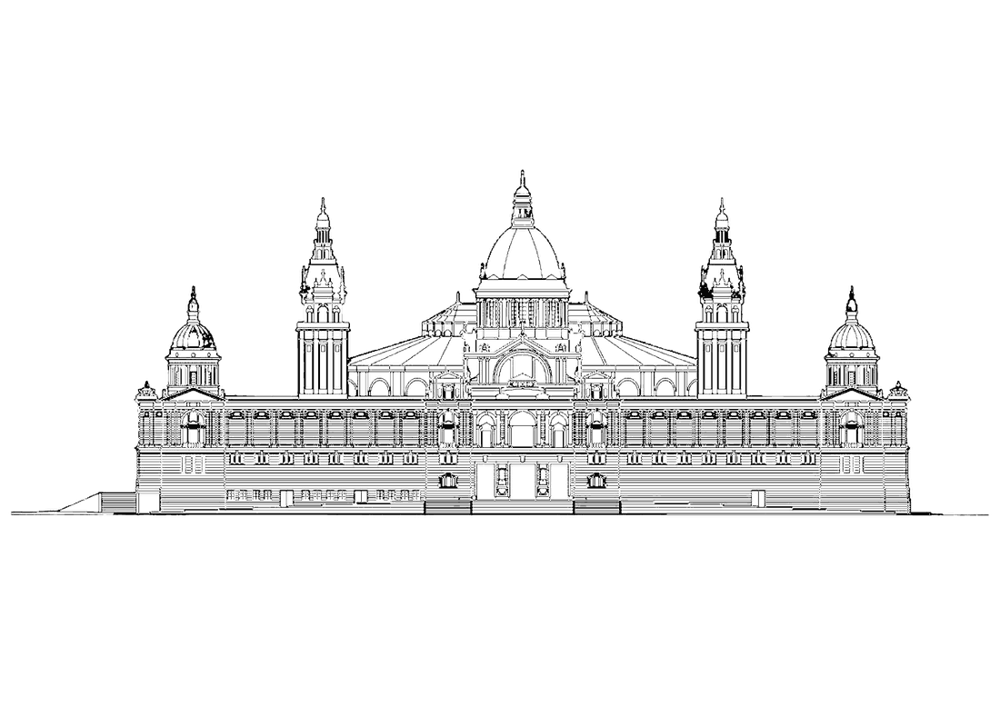

Sistema artístic
+ Per saber-ne mésMarc legal
La llei
Projecte de llei de drets culturals de Catalunya
Expedient parlamentari: 200-00017/15 · Dossier Legislatiu: DL núm. 131
La llei regula:
- Dret d'accés a la cultura.
- Dret a la participació cultural activa.
- Dret a la creació artística.
- Descentralització territorial dels recursos culturals.
- Diversitat cultural i inclusió.
- Garantia d'equipaments i serveis culturals públics.
- Protecció dels drets culturals de la ciutadania.
L'estatut
Reial decret llei 5/2022 · Reial decret llei 1/2023
L'estatut regula:
- Compatibilitat entre jubilació i activitat artística.
- Prestació específica per atur de les persones artistes.
- Millores en la cotització dels artistes.
- Reconeixement de la intermitència laboral.
- Adaptació de la Seguretat Social a les professions culturals.
- Mesures per reduir la precarietat estructural del sector.
El Sistema artístic institucionalment està format per:
Museus
- Museu Morera
- Museu d'Art Modern de Tarragona (MAMT)
- Museu d'Art de Girona
- MACBA
- MNAC
Centres d'art
- Centre d'Art La Panera
- Lo Pati Centre d'Art (Amposta)
- Mèdol Centre d'Arts Contemporànies (Tarragona)
- Bòlit Centre d'Art Contemporani (Girona)
- Santa Mònica
- Tecla Sala (L'Hospitalet)
- Can Manyé (Alella)
- M|A|C Mataró Art Contemporani
Centres de producció
- Centre d'Art de Tarragona (projectes municipals)
- Hangar
- La Capella
- Sala d'Art Jove
Espais de producció i residència
- Nau Côclea (Camallera)
- Les Bernardes (Salt)
Fàbriques de creació
- Fabra i Coats
- La Escocesa
Fundacions
- Fundació Miró
- Fundació Tàpies
- Fundació Vila Casas
- Fundació Joan Brossa
